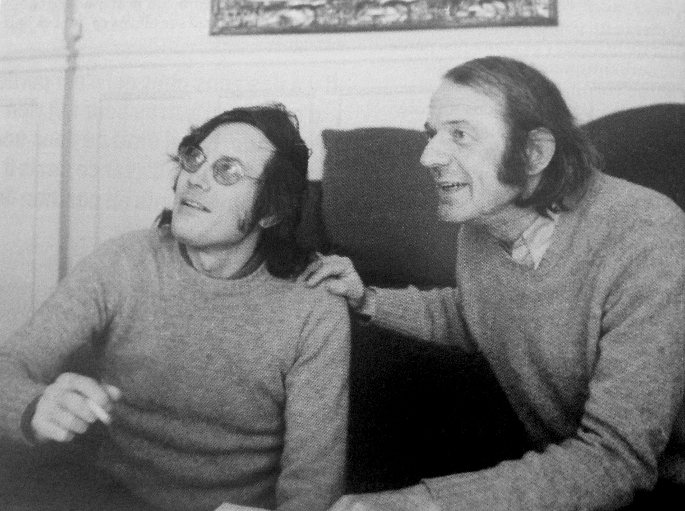

Question: When you describe capitalism, you say: 'There isn't the slightest operation, the slightest industrial or financial mechanism that does not reveal the dementia of the capitalist machine and the pathological character of its rationality (not at all a false rationality, but a true rationality of this pathology, of this madness, for the machine does work, be sure of it). There is no danger of this machine going mad, it has been mad from the beginning and that's where its rationality comes from.' Does this mean that after this 'abnormal' society, or outside of it, there can be a 'normal' society?
Deleuze: We do not use the terms 'normal' or 'abnormal'. All societies are rational and irrational at the same time. They are perforce rational in their mechanisms, their cogs and wheels, their connecting systems, and even by the place they assign to the irrational. Yet all this presupposes codes or axioms which are not the products of chance, but which are not intrinsically rational either. It's like theology: everything about it is rational if you accept sin, immaculate conception, incarnation. Reason is always a region cut off from the irrational – not sheltered from the irrational at all, but a region traversed by the irrational and defined only by a certain type of relation between irrational factors. Underneath all reason lies delirium, drift. Everything is rational in capitalism, except capital or capitalism itself. The stock market is certainly rational; one can understand it, study it, the capitalists know how to use it, and yet it is completely delirious, it's mad. It is in this sense that we say: the rational is always the rationality of an irrational.
Something that hasn't been adequately discussed about Marx's Capital is the extent to which he is fascinated by capitalists' mechanisms, precisely because the system is demented, yet works very well at the same time. So what is rational in a society? IT is – the interests being defined in the framework of this society – the way people pursue those interests, their realisation. But down below, there are desires, investments of desire that cannot be confused with the investmenets of interest, and on which interests depend in their determination and distribution: an enormous flux, all kinds of libidinal-unconscious flows that make up the delirium of this society. The true story is the history of desire. […] A 'disinterested' love for the oppressive machine: Nietzsche said some beautiful things about this permanent triumph of slaves, on how the embittered, the depressed and weak, impose their mode of life upon us all.
Question: So what is specific to capitalism in all this?
Deleuze: Are delirium and interest, or rather desire and reason, distributed in a completely new, particularly 'abnormal' way in capitalism? I believe so. […] In other societies, there is exploitation, there are also scandals and secrets, but that is part of the 'code'; there are even explicitly secret codes. With capitalism, it is very different: nothing is secret, at least in principle and according to the code (this is why capitalism is 'democratic' and can 'publicize' itself, even in a juridical sense). And yet nothing is admissible. Legality itself is inadmissible. By contrast to other societies, it is a regime born of the public and the admissible. A very special delirium inherent to the regime of money. Take what are called scandals today: newspapers talk a lot about them, some people pretend to defend themselves, others go on the attack, yet it would be hard to find anything illegal in terms of the capitalist regime. The prime minister's tax returns, real estate deals, pressure groups, and more generally the economical and financial mechanisms of capital – in sum, everything is legal, except for little blunders; what is more, everything is public, yet nothing is admissible. If the left was 'reasonable', it would content itself with vulgarizing economic and financial mechanisms. There's no need to publicize what is private, just make sure that what is already public is being admitted publicly. One would find oneself in a state of dementia without equivalent in the hospitals.
Instead, one talks of 'ideology'. But ideology has no importance whatsoever: what matters is not ideology, not even the 'economic-ideological' distinction or opposition, but the organization of power. Because organization of power – that is, the manner in which desire is already in the economic, in which libido invests the economic – haunts the economic and nourishes political forms of repression.
Question: So is ideology a trompe l'oeil?
Deleuze: Not at all. To say 'ideology is a trompe l'oeil', that's still the traditioanl thesis. One puts the infrastructure on one side – the economic, the serious – and on the other, the superstructure, of which ideology is a part, thus rejecting the phenomena of desire in ideology. […] We say: there is no ideology, it is an illusion. That's why it suits orthodox Marxism and the Communist Party so well. Marxism has put so much emphasis on the theme of ideology to better conceal what was happening in the USSR: a new organization of repressive power. There is no ideology, there are only organizations of power once it is admitted that the organization of power is the unity of desire and the economic infrastructure. Take two examples. Education: in May 1968 the leftists lost a lot of time insisting that professors engage in public self-criticism as agents of bourgeois ideology. It's stupid, and simply fuels the masochistic impulses of academics. […] In the meantime, the more conservative professors had no difficulty reorganizing their power. The problem of education is not an ideological problem, but a problem of the organization of power: it is the specificity of educational power that makes it appear to be an ideology, but it's pure illusion. […] Second example: Christianity. The church is perfectly pleased to be treated as an ideology. This can be argued; it feeds ecumenism. But Christianity has never been an ideology; it's a very specific organization of power that has assumed diverse forms since the Roman Empire and the Middle Ages, and which was able to invent the idea of international power. It's far more important than ideology.
Guattari: […] In a way, May 1968 was an astonishing revelation. The desiring power became so accelerated that it broke up the groupuscules. These later pulled themselves together; they participated in the reordering business with the other repressive forces, the CGT [Communist worker's union], the PC, the CRS [riot police]. I don't say this to be provocative. Of course, the militants courageously fought the police. But if one leaves the sphere of struggle to consider the function of desire, one must recognize that certain groupuscules approached the youth in a spirit of repression: to contain liberated desire in order to re-channel it.
Question: What is liberated desire? I certainly see how this can be translated at the level of an individual or small group: an artistic creation, or breaking windows, burning things, or even simply an orgy or letting things go to hell through laziness or vegetating. But then what? What could a collectively liberated desire be at the level of a social group? […]
Guattari: We have taken desire in one of its most critical, most acute stages: that of the schizophrenic – and the schizo that can produce something within or beyond the scope of the confined schizo, battered down with drugs and social repression. It appears to us that certain schizophrenics directly express a free deciphering of desire. But now does one conceive a collective form of the economy of desire? Certainly not at the local level. I would have a lot of difficulty imagining a small, liberated community maintaining itself against the flows of a repressive society, like the addition of individuals emancipated one by one. If, on the contrary, desire constitutes the very texture of society in its entirety, including in its mechanisms of reproduction, a movement of liberation can 'crystallize' in the whole of society. In May 1968, from the first sparks to local clashes, the shake-up was brutally transmitted to the whole of society, in some groups that had nothing remotely to do with the revolutionary movement – doctors, lawyers, grocers. Yet it was vested interests that carried the day, but only after a month of burning. We are moving toward explosions of this type, yet more profound.
Question: Might there have already been a vigorous and durable liberation of desire […] Or do you really believe in an end of history; after millennia of alienation, social evolution will suddenly turn around in a final revolution that will liberate desire forever?
Guattari: Neither the one nor the other. Neither a final end to history, nor provisional excess. All civilizations, all periods have known ends of history – this is not necessarily convincing and not necessarily liberating. As for excess, or moments of celebration, this is no more reassuring. […] See the discussion between Victor and Foucault in the issue of Les Temps Moderns on the Maoists. Victor consents to excess, but at the 'first stage'. As for the rest, as for the real thing, Victor calls for a new apparatus of state, new norms, a popular justice with a tribunal, a legal process external to the masses, a third party capable of resolving contradictions among the masses. One always finds the old schema: the detachment of a pseudo [sic] capable of bringing about syntheses, of forming a party as an embryo of state apparatus, of drawing out a well brought up, well educated working class; and the rest is a residue, a lumpen-proletariat one should always mistrust (the same old condemnation of desire). But these distinctions themselves are another way of trapping desire for the advantage of a bureaucratic caste. Foucault reacts by denouncing the third party, saying that if there is popular justice, it does not issue from a tribunal. He shows very well that the distinction 'avant-garde-lumpen-proletariat' is first of all a distinction introduced by the bourgeoisie to the masses, and therefore serves to crush the phenomena of desire, to marginalize desire. The whole question is that of state apparatus. It would be strange to rely on a party or state apparatus for the liberation of desire.
To want better justice is like wanting better judges, better cops, better bosses, a cleaner France, etc. And then we are told: how would you unify isolated struggles without a party? How do you make the machine work without a state apparatus? It is evident that a revolution requires a war machine, but this is not a state apparatus, it is also certain that it requires an instance of analysis, an analysis of the desires of the masses, yet this is not an apparatus external to the synthesis. Liberated desire means that desire escapes the impasse of private fantasy: it is not a question of adapting it, socializing it, disciplining it, but of plugging it in in such a way that its process not be interrupted in the social body, and that its expression be collective. What counts is not the authoritarian unification, but rather a sort of infinite spreading: desire in the schools, the factories, the neighborhoods, the nursery schools, the prisons, etc. It is not a question of directing, of totalising, but of plugging into the same plan of oscillation. As long as one alternates between the impotent spontaneity of anarchy and the bureaucratic and hierarchic coding of a party organization, there is no liberation of desire.
"Subjects of Sex/Gender/Desire" from "Gender Trouble" (Judith Butler)
Source